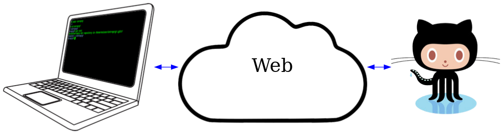
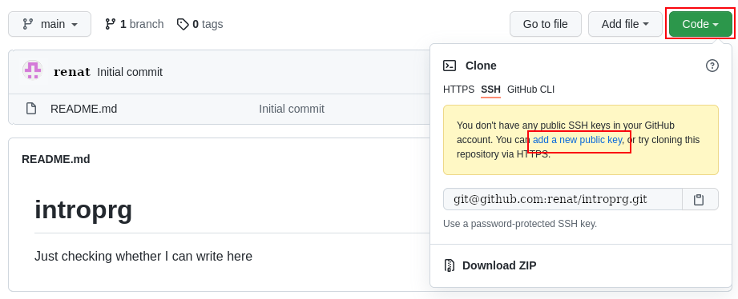
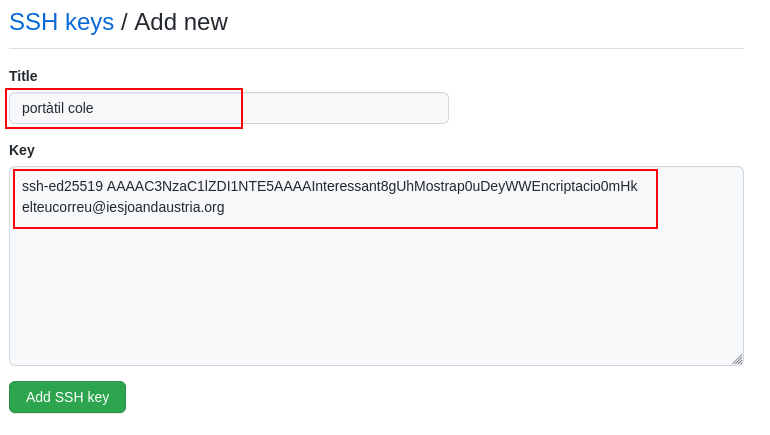

Git i GitHub
Ara que ja hem vist quin aspecte fan els programes, ens toca fer els nostres!
En primer lloc passarem a preparar l'equip entorn per poder realitzar les activitats d'aquest curs.
El que ve a continuació és una seqüència de passes que hauràs de realitzar. Moltes de les passes les realitzaràs escrivint instruccions a un terminal.
Per obrir un terminal, recorda que pots fer amb ctrl-alt-t o alt-f2
gnome-terminal, amb tecla de finestres seguit de terminal, entre
altres maneres.
Assegura't que segueixes totes les passes amb precisió. No et preocupis, però, si t'equivoques, doncs no pots trencar res. En el pitjor dels casos et pot passar que et toqui tornar a començar. Demana ajut sense vergonya.
GitHub
GitHub1 és una coneguda xarxa social per desenvolupadors.
Caldrà que disposis d'un repositori a GitHub per a poder realitzar bona part de les activitats d'aquest curs.
Pots entendre un repositori com una carpeta del teu ordinador però que serà guardada al GitHub.
Disposar d'un repositori a GitHub presenta, a més de poder veure avaluades les teves activitats, una sèrie d'avantatges interessants:
no perdràs cap fitxer ni contingut que pugis al teu GitHub
la feina que facis a classe la podràs continuar a casa (o allà on puguis) i, en tornar a classe, et trobaràs les actualitzacions disponibles
et familiaritzaràs amb una de les eines més utilitzades i millor valorades pels desenvolupadors en l'actualitat
Crear repositori
Crear el teu repositori és molt fàcil. En primer lloc, ves a https://github.com/ i, si encara no en tens un, crea't un compte.
Et recomano que la compta de correu que facis servir sigui el teu personal, doncs així el podràs aprofitar com el teu espai personal també en acabar el curs.
Un cop disposes del teu compte, crea un repositori.
Anomena'l introprg, marca'l com a privat i demana que inicialitzi
el repositori amb un README. Finalment prem el botó de crear, deixant la
resta d'opcions sense tocar.
Afegir-me com a col·laborador
Un cop has creat el nou repositori, cal que m'afegeixis com a col·laborador.
Ves a settings, selecciona Manage access i afegeix el meu usuari de
github: moiatjda.
Abans d'acceptar enviar la invitació, assegura't que és per mi. El quadre de diàleg hauria de tenir el següent aspecte:
Un cop ho tinguis clar, prem el botó Add moiatjda to introprg.
Notifica que ja estàs
Encara un petit pas més. Malgrat m'arribarà una notificació de que m'has convidat al teu repositori, no em resultarà fàcil saber que ets un dels meus alumnes. GitHub és molt escrupolós amb la teva privacitat i no compartirà la teva adreça amb potencials desconeguts.
Em caldrà que m'enviïs un correu amb l'adreça del centre en el que m'indiquis:
el teu nom complet
el nom amb el que t'agradaria que em referís a tu
Per exemple, si et dius Renat Maria, potser t'agrada que et diguin simplement Renat o Renny o Maria.
Si no m'indiques cap nom, faré servir el teu nom complet sense els cognoms.
la URL del teu repositori
Trobaràs la URL del teu repositori aquí:
Fes click sobre el botó verd Code i copia la el contingut de la caixeta
que t'apareix. En el meu cas git@github.com:renat/introprg.git.
Podràs copiar aquesta adreça amb la combinació de tecles <CTRL> c o bé
fent click sobre el botó que apareix a la dreta. El podràs enganxar al teu
correu amb <CTRL> v o amb el botó dret del ratolí i Enganxa.
Espai de treball
Ara que ja tenim la part remota enllestida, passem a preparar el nostre espai de treball al PC.
Creem una clau SSH
La versió actual de GitHub convida a fer servir una clau SSH de manera que no calgui anar posant el password de GitHub constantment.
El que farem ara no és complex però requereix que et concentris per no equivocar-te o no funcionarà i et tocarà començar de nou.
En primer lloc, tingues preparades les següents dades:
la teva adreça de correu. Millor si és la del centre
Hauràs de posar la teva adreça a la comanda de la línia 1 del llistat que ve a continuació.
decideix si et cal protegir la clau que generaràs amb un password.
Disposar d'un password farà més segura la teva instaŀlació però també més incòmoda d'usar ja que et caldrà anar introduint la contrasenya de tant en tant.
Si és el teu equip al que només tu tens accés i has posat un bon password per entrar al sistema, tenint en comptes la criticitat del que farem al curs, probablement no és cap problema no posar-li password. Decideix tu i si dubtes, pregunta.
En cas que vulguis posar-li un password, l'hauràs d'introduïr dos cops a les línies 4 i 5 del llistat següent.
Obre una consola o terminal, per exemple amb ctrl-alt-t o alt-f2
gnome-terminal, tot i que segurament trobaràs també opcions als menús.
Escriu les següents comandes amb cura, tot posant les teves dades:
1$ ssh-keygen -t ed25519 -C "elteucorreu@iesjoandaustria.org"
2Generating public/private ed25519 key pair.
3Enter file in which to save the key (/home/usuari/.ssh/id_ed25519):
4Enter passphrase (empty for no passphrase):
5Enter same passphrase again:
6Your identification has been saved in /home/usuari/.ssh/id_ed25519.
7Your public key has been saved in /home/usuari/.ssh/id_ed25519.pub.
8The key fingerprint is:
9SHA256:wfKXAdJmaos/xDA/aebLxXPEsTotInven+a+Ytgzon8 elteucorreu@iesjoandaustria.org
10The key's randomart image is:
11+--[ED25519 256]--+
12| o.=o... |
13| .o.+oX.. |
14|. =+o..+o . |
15| +. =.+o . o |
16|. . %.oS o |
17|o. +.X. . |
18| +. =.+o . o |
19| o =+ |
20| +o |
21+----[SHA256]-----+
Això t'ha generat uns nous fitxers a una carpeta oculta anomenada
~/.ssh:
$ ls ~/.ssh
authorized_keys id_ed25519 id_ed25519.pub
Hauràs de copiar el contingut del fitxer id_ed25519.pub (la clau
pública) que podràs consultar amb cat
$ cat ~/.ssh/id_ed25519.pub
ssh-ed25519 AAAAC3NzaC1lZDI1NTE5AAAAInteressant8gUhMostrap0uDeyWWEncriptacio0mHk elteucorreu@iesjoandaustria.org
Selecciona la sortida de cat que comença amb ssh-ed i acaba amb el
final de la teva adreça de correu. Ho pots fer amb el ratolí i, amb botó
dret escollir Copia
Ara torna al teu repositori a GitHub, selecciona el botó verd Code, clica sobre SSH i segueix l'enllaç add a new public key
Això et portarà a la següent pàgina on hauràs d'indicar un nom per la teva clau i enganxar el text que has copiat del terminal
Jo he escollit com a nom portàtil cole perquè penso que també treballaré en l'ordinador fix que tinc a casa, pel que també hauré de crear una clau SSH.
A la secció Key del formulari, assegura't que s'ha copiat tota la clau i que no hi ha espais ni salts de línia de mes al final.
Un cop ho tinguis clar, prem Add SSH key i ja estem d'aquesta part!
Vinculem-nos amb GitHub
Escriu al terminal les següents comandes:
$ cd
$ git clone git@github.com:elteuusuariagithub/introprg.git
Cloning into 'introprg'...
The authenticity of host 'github.com (140.82.121.4)' can't be established.
RSA key fingerprint is SHA256:nThbg6kXUpJWGl7MyFingerPrintdCARLsaganE5SY8.
Are you sure you want to continue connecting (yes/no)? yes
Warning: Permanently added 'github.com,140.82.121.4' (RSA) to the list of known hosts.
remote: Enumerating objects: 6, done.
remote: Counting objects: 100% (6/6), done.
remote: Compressing objects: 100% (3/3), done.
Receiving objects: 100% (6/6), done.
remote: Total 6 (delta 0), reused 0 (delta 0), pack-reused 0
$ cd introprg/
$ ls
README.md
$ cat README.md
# introprg
Just checking whether I can write here
Les comandes anteriors han creat una carpeta anomenada introprg/ a la
carpeta principal del teu usuari al sistema, i han inicialitzat aquesta
carpeta com a repositori git vinculat amb el que vas crear abans a
GitHub.
Si et fixes, el contingut del fitxer README.md és el mateix que ens ha
generat GitHub.
Diguem qui som
Per què git pugui funcionar bé, necessita saber algunes coses de tu.
Escriu per consola les següents comandes, tot indicant el teu nom real i la teva adreça de correu:
$ git config --global user.name "el teu nom real"
$ git config --global user.email "lamevaadreça@iesjoandaustria.org"
Afegirem també la següent configuració addicional2:
$ git config --global pull.rebase true
Creem el primer fitxer
La finalitat de git és gestionar les versions de fitxers, així que toca afegir-ne.
El primer fitxer que afegirem és una descripció de què contindrà el
repositori. En els repositoris git és convenció que aquest fitxer es
digui readme (llegeix-me en anglès)
Com que ja hem demanat a GitHub que ens creés aquest fitxer, ara mateix ja el tenim:
$ ls
readme.md
L'extensió .md és per continguts en markdown un llenguatge de
marques lleuger. Si ja coneixes aquest format, el pots mantenir.
Altrament, segueix les instruccions per convertir-ho en un altre format
anomenat reStructuredText que serà el que faré servir en aquests apunts.
En primer lloc, elimina el fitxer:
$ rm README.md
Crea ara un fitxer anomenat readme.rst. Una manera
fàcil de fer-ho seria:
$ gedit readme.rst
La comanda anterior t'obrirà l'editor de text gedit on hi podràs
escriure una descripció de què contindrà el teu repositori.
Et proposo que escriguis quelcom similar a:
############################
Introducció a la Programació
############################
Activitats del curs d'introducció a la programació per cicles de
desenvolupament al centre IES Joan d'Àustria
Potser hi voldràs posar el teu nom i alguna cosa més relacionada amb tu.
Un cop hagis acabat, guarda el fitxer (ex. prement el botó desa o bé
la combinació de tecles ctrl-s)
Comprovem que ha anat tot bé:
$ git status
On branch main
Your branch is up to date with 'origin/main'.
Changes not staged for commit:
(use "git add/rm <file>..." to update what will be committed)
(use "git checkout -- <file>..." to discard changes in working directory)
deleted: README.md
Untracked files:
(use "git add <file>..." to include in what will be committed)
readme.rst
no changes added to commit (use "git add" and/or "git commit -a")
Si és així, registrem els canvis al git:
$ git add readme.rst
$ git commit -am "Primer commit"
[master 0aaf170] Primer commit
2 files changed, 7 insertions(+)
delete mode 100644 readme.md
create mode 100644 readme.rst
Ara ja has estrenat el teu repositori!
Pugem els primers continguts al GitHub
Ara ja podem pujar aquests continguts a GitHub. Escriu:
$ git push
Enumerating objects: 4, done.
Counting objects: 100% (4/4), done.
Delta compression using up to 2 threads
Compressing objects: 100% (2/2), done.
Writing objects: 100% (3/3), 366 bytes | 366.00 KiB/s, done.
Total 3 (delta 0), reused 0 (delta 0)
To github.com:mgome298/introprg.git
0d5353e..b9239f4 main -> main
En introduir-los, els continguts ja estaran salvats a GitHub. Si vols, ho pots comprovar mirant a GitHub (recorda recarregar la pàgina al navegador!)
Juguem una mica: un altre espai de treball
Fem una petita activitat addicional per entendre la potència del sistema que tenim muntat.
Un cop que hem guardat el nostre repositori a GitHub, ja el tenim
disponible per a ser utilitzat des d'altres equips que disposin de
git.
En aquesta activitat simularem que ens hem canviat de PC només canviant de directori, però les mateixes passes serveixen per recuperar la nostra feina en qualsevol altre equip.
En primer lloc clonarem el nostre treball a la carpeta temporal /tmp/.
Sovint el contingut d'aquesta carpeta és eliminat cada cop que iniciem
l'equip. Per tant, el que fem aquí no tindria gaire futur si no el pugem
a GitHub.
$ cd /tmp
$ git clone git@github.com:renat/introprg.gi temporal
$ cd temporal
Fixa't que disposes dels mateixos continguts que tenies al teu espai de treball
guardat a la carpeta introprg/
Ara crearem un nou fitxer, l'afegirem a git i el pujarem a GitHub
El podem crear, per exemple, editant-lo:
$ gedit eliminam.txt
Però com que ja estem apuntant a nivell pro, ho farem des de terminal amb una sola línia:
$ echo 'un fitxer a eliminar' > eliminam.txt
Podem comprovar que el fitxer hi és, fent servir la utilitat ls
$ ls
…
eliminam.txt
…
També podem consultar el contingut del fitxer, per exemple, fent servir la
utilitat cat:
$ cat eliminam.txt
un fitxer a eliminar
Ara toca dir-li a git que ha de gestionar aquest nou fitxer:
$ git add eliminam.txt
$ git commit -am "Afegit un fitxer des de l'espai de treball temporal"
$ git push
Un cop introduït el password, el nou fitxer hauria d'estar a GitHub.
Ara simularem que tornem al nostre equip de classe, i recuperarem els continguts que hem realitzat al directori temporal:
$ cd ~/introprg
$ git pull
Un cop introduït el password, ja tindrem disponible el fitxer eliminam.txt.
$ cat eliminam.txt
un fitxer a eliminar
Ara que ja hem vist com actualitzar la feina realitzada en un altre lloc, ja podem eliminar aquest fitxer que no necessitem per a res. Primer l'eliminarem del directori de treball i després del GitHub
$ rm eliminam.txt
$ git status
…
deleted: eliminam.txt
…
Fixa't que la resposta de git status és que el fitxer eliminam.txt ha
estat eliminat. Indicarem a git que el volem eliminat i pujarem els canvis a
GitHub, on també quedarà eliminat.
$ git commit -am "eliminat fitxer que feia nosa"
$ git push
Ja està.
Si vols practicar una mica més, pots tornar a /tmp/temporal/ i fer un
git pull per que el fitxer quedi eliminat també allà. De fet, si tens
temps, juga una mica més, tot clonant en altres carpetes o fins i tot
màquines, i creant-hi nous fitxers o modificant el
contingut d'existents. Només ha de recordar registrar els canvis a git
(add i commit) i pujar-los a (push) o baixar-los de (pull)
GitHub.
 Exercici 00_03. Quadrat a l'inrevés
Exercici 00_03. Quadrat a l'inrevés
- 1
A banda del GitHub hi ha d'altres xarxes similars disponibles. Per exemple, gitlab o BitBucket.
No vol dir que aquestes altres xarxes siguin pitjors. He escollit GitHub només perquè ja la faig servir per hostatjar aquests apunts i per uniformitzar la gestió de les teves activitats.
- 2
A les versions recents de git (+2.27) han afegit un missatge d'avís amb una de les comandes (
pull) que pot resultar una mica confós quan estàs començant a descobrir l'eina. Aquest valor de configuració és adequat per l'ús que en farem.